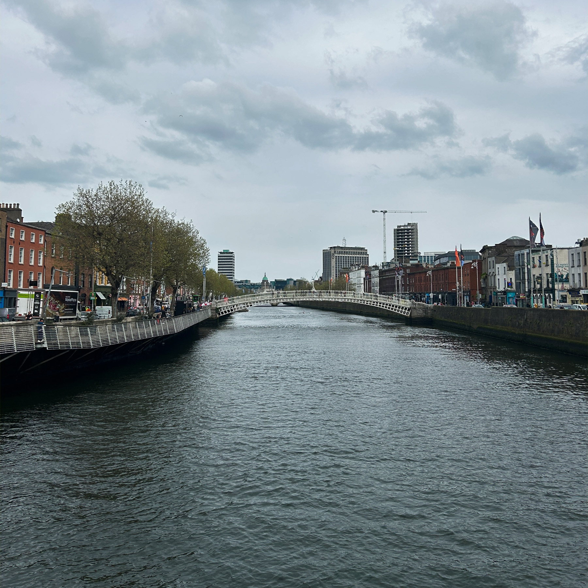
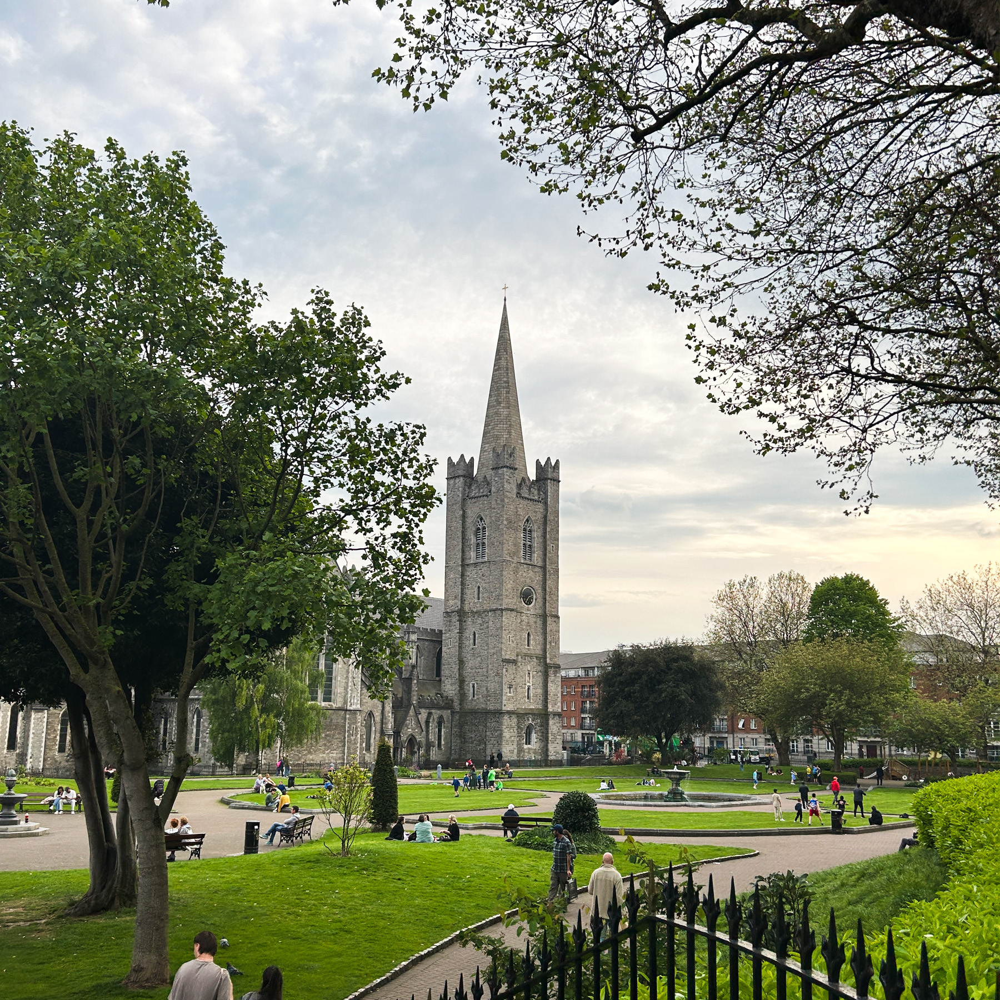
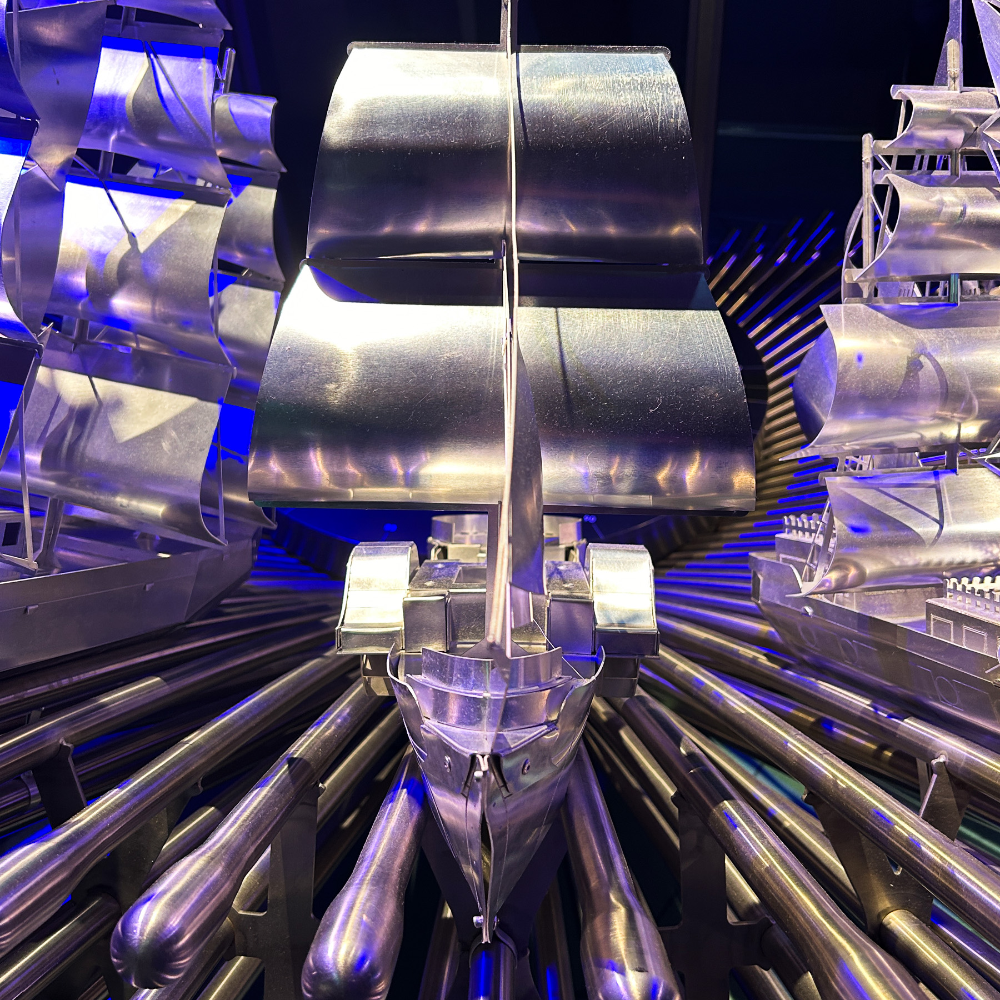
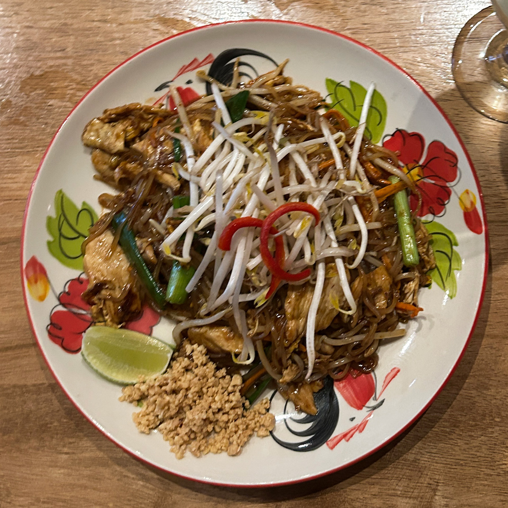
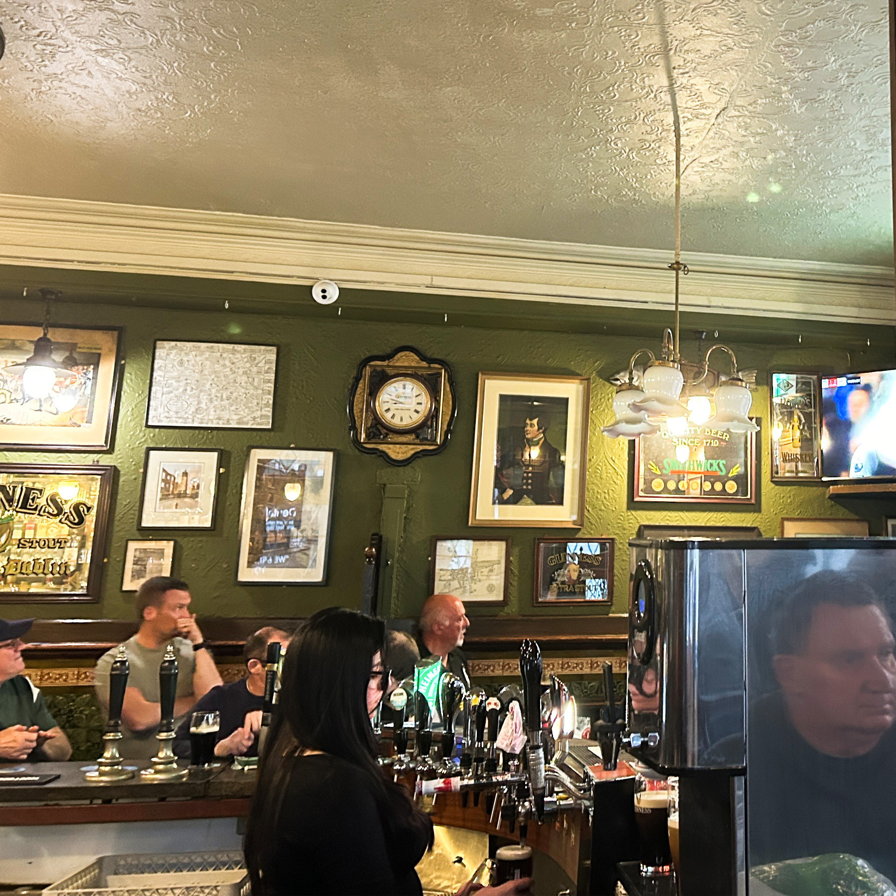
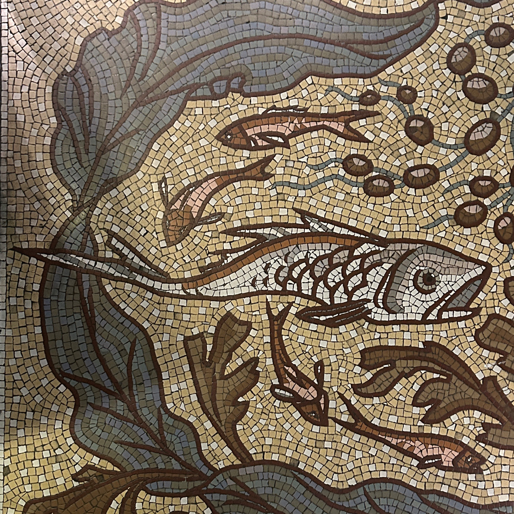
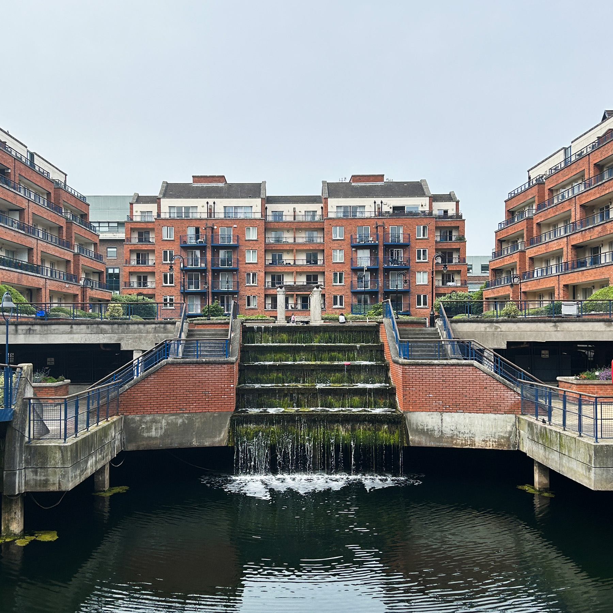
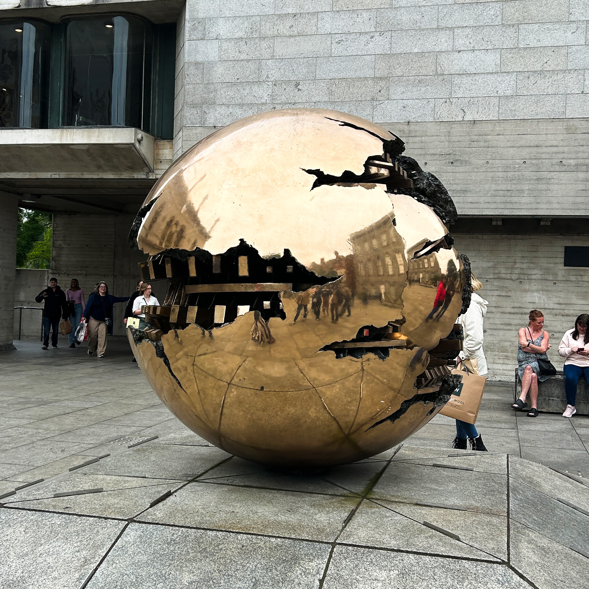
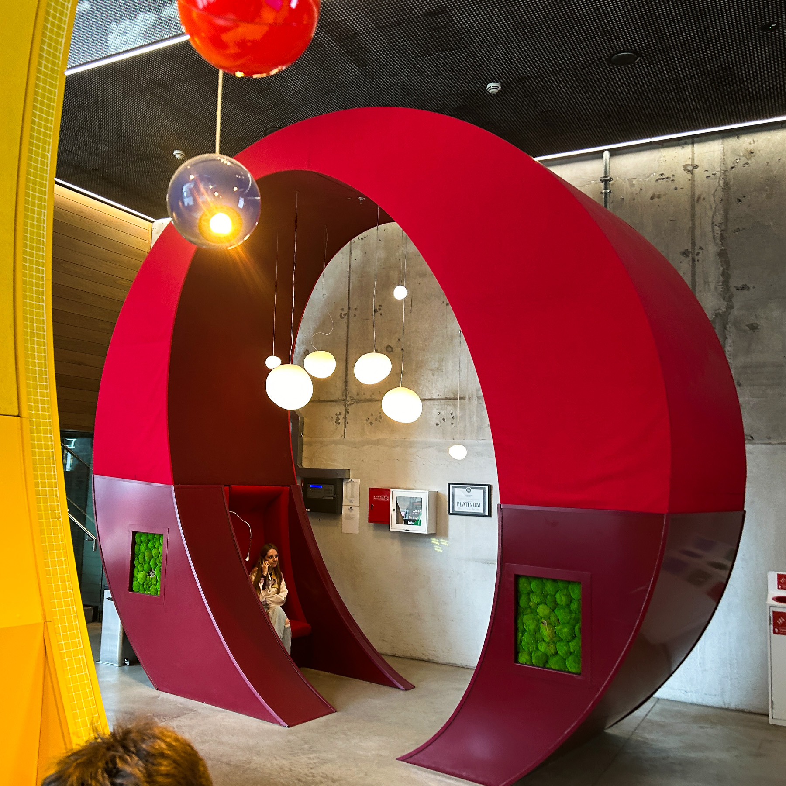
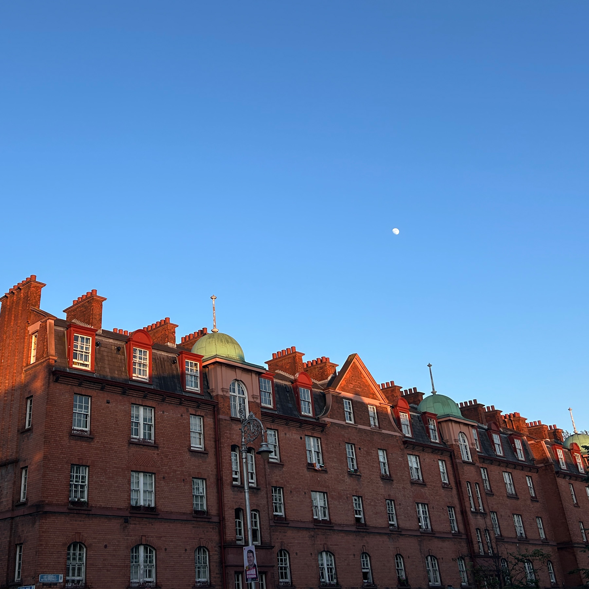

Dublin
Instead of me telling you the history of this wonderful city, experience it throught my eyes!
Gallery

Bus Tour

Griffith Spire

Fumbally Cafe Table

National History Musuem

Vice Coffee

Henry Street

Spice Bag

Jackie's

St.Patrick's Park

Plant Store

Street 66

Navya at Street 66

EPIC Musuem

Vice Coffee

St. Patrick's Park

Drury St.

Boat at the Epic Musuem

Bar at the Epic Musuem

Annabel and I

Bright Doors of Dublin

Full Moon Pad Thai

The Lord Edward

Perfect Guinness

The Docklands

National History Musuem tile floors

BigFan Chicken

National History Musuem

Fumbally Sandwich

Microsoft

Microsoft Inside

John's Bar and Haberdashery

Cafe Topolis

The Docklands

Trinity College Sculpture

Workmans

Google Lobby

Trinity College

Sweny's

Dublin from the roof of Google

Dublin Streets
Granola from Two Pups Coffee
Trinity College
National Gallery
Duft, Hannah Hoch
Two Pups Coffee
The National Gallery

The George
The Saycy Cow
Oscar Wilde
Molly Malone
Sweny's

Irish Modern Museum of Art
Plant Store
Pottery at the National History Museum
National History Museum
Bones
National History Museum
Kari
Temple Bar
Trinity Bar
Castle
Custom House
EPIC Museum
The Fumbally
St. Johns Church
Dublina
Gogarty's